Multi-Tenant AI Assistant Portal
Tenant Administrator User Guide
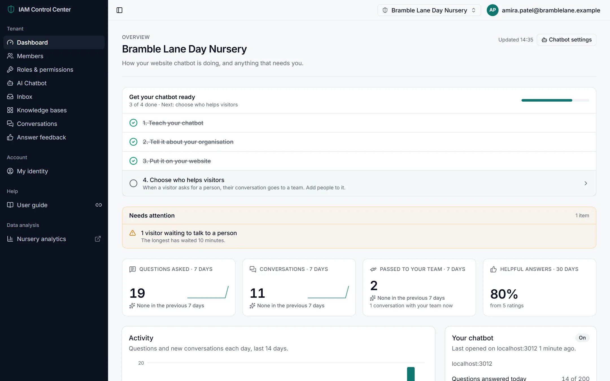
Teach it
Add documents and web pages your chatbot answers from.
Shape it
Name it, set its tone and decide what it must never do.
Watch it
Review conversations, ratings and questions it couldn't answer.
About the screenshots in this guide
Every screenshot is taken from the real portal, using a fictional example organisation, Bramble Lane Day Nursery, whose chatbot answers parents' questions about places, fees, sessions and policies. The people, documents and conversations shown are made up. Your organisation's name, content and numbers will differ, but every screen, button and setting works the same way.
Welcome
What the AI Assistant Portal is, how your organisation uses it, and what you are responsible for as its administrator.
What is the AI Assistant Portal?
The AI Assistant Portal is where your organisation runs its own AI chatbot: a helpful assistant that sits on your website and answers visitors' questions around the clock, in plain language.
Unlike a general-purpose AI, your chatbot answers only from information you give it — your documents and your web pages. Every factual answer shows which of your sources it came from, so you and your visitors can check it. If your content doesn't cover a question, the chatbot says so honestly instead of guessing, and the question appears on your dashboard so you can fill the gap.
Your organisation is one tenant of the portal. Your content, conversations and settings are completely separate from every other organisation's: no other tenant can see your data, and your chatbot never uses theirs.
How it works, in four steps
- You teach it. Upload documents (PDF, Word, Excel and more) or point it at pages of your website. The portal reads them and makes them searchable.
- You shape it. Give it a name, a role, a tone of voice, and a list of topics it must avoid.
- You publish it. Paste one line of code into your website, and the chat bubble appears for your visitors.
- You look after it. Watch the dashboard, read conversations, act on ratings and unanswered questions, and keep your content up to date.
Benefits for your organisation
Visitors get accurate answers at any hour, without waiting for your team.
Answers come from your own approved content, with sources shown — never invented.
Visitors can ask for a colleague; the conversation passes to your team's Inbox.
The dashboard shows exactly which questions your content doesn't answer yet.
Your responsibilities as Tenant Administrator
The Tenant Administrator controls what the AI assistant knows, monitors its conversations, manages who can use the portal, and makes sure visitors receive accurate answers.
| Area | What you do | Where |
|---|---|---|
| Knowledge | Add, update and remove the documents and web pages the chatbot answers from. | Knowledge bases |
| Chatbot behaviour | Set its name, greeting, role, restrictions, tone and when it hands over to a person. | AI Chatbot |
| Quality | Test answers, review ratings and fix unanswered questions. | Testing, Answer feedback |
| Conversations | Review what visitors ask and make sure handed-over conversations get a reply. | Conversations, Inbox |
| People & access | Decide who in your organisation can use the portal, and what they can do. | Members, Roles & permissions |
| Usage | Keep an eye on daily questions and your monthly AI allowance. | Dashboard |
Your first day
Five steps, about an hour in total, from your first sign-in to a chatbot you're happy to show parents. Everything else in this guide can wait.
- Sign in and secure your account (10 minutes). Sign in, then turn on two-step sign-in in My identity. How to sign in
- Check what your chatbot knows (15 minutes). Open Knowledge bases → Documents. Make sure the documents your visitors need are there and marked Ready: fees and funding, opening hours and closures, admissions and visits, and your main policies. Upload anything missing.
- Tell it about your organisation (10 minutes). On the AI Chatbot page, fill in the Company tab and read the Behaviour tab. The defaults are sensible; add only what's specific to you.
- Ask it your ten most common questions (15 minutes). Use Ask in the portal, then try the same questions on your website in a private window. Fix anything it gets wrong in your documents, not in its settings. Improving answers
- Decide who helps visitors (10 minutes). Create a team in the Inbox and add the people who will answer when a parent asks to speak to someone.
Then go live
When those five steps are done, the dashboard's setup checklist disappears. Follow the first-week plan to launch with confidence.
What can wait
- Roles, hierarchy and overrides. The built-in roles suit most organisations. See Roles when you need something different.
- Tone, quick replies and the chatbot's name. The defaults work; adjust them once you've seen real conversations.
- Time zone and retention. Check them once (Handoff & limits); you rarely need to change them again.
Stuck?
Press / to search this guide, or look in Troubleshooting. Problems are listed by what you see, not by error code.
Getting started
Sign in, find your way around, and secure your account.
Signing in
- Page
- Sign in
- Address
- The portal address your platform provider gave you, for example
https://portal.yourcompany.com. Bookmark it. - Purpose
- Confirms who you are before showing your organisation's data.
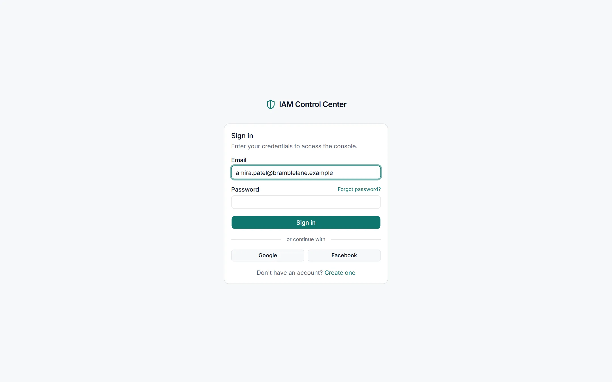
- Open the portal addressin your web browser. Any modern browser works: Chrome, Edge, Firefox or Safari.
- Enter your email addressin the Email box — the one your administrator registered for you.
- Enter your passwordin the Password box.
- Click Sign in. If you have turned on an authenticator app (see My identity), you'll be asked for the six-digit code it shows.
Signing in with Google or Facebook
The Google and Facebook buttons work only if your provider has enabled them and your social account uses the same email address as your portal account. If you're not sure, use your email and password.
Forgot your password?
Click Forgot password? on the sign-in page and follow the steps. If the reset email doesn't arrive within a few minutes (check your spam folder), contact your platform administrator — they can help you get back in.
Your first sign-in
After signing in, you land on your organisation's Dashboard. If you belong to more than one organisation, use the organisation switcher at the top right to move between them. Everything you see — content, conversations, members — always belongs to the organisation shown there.
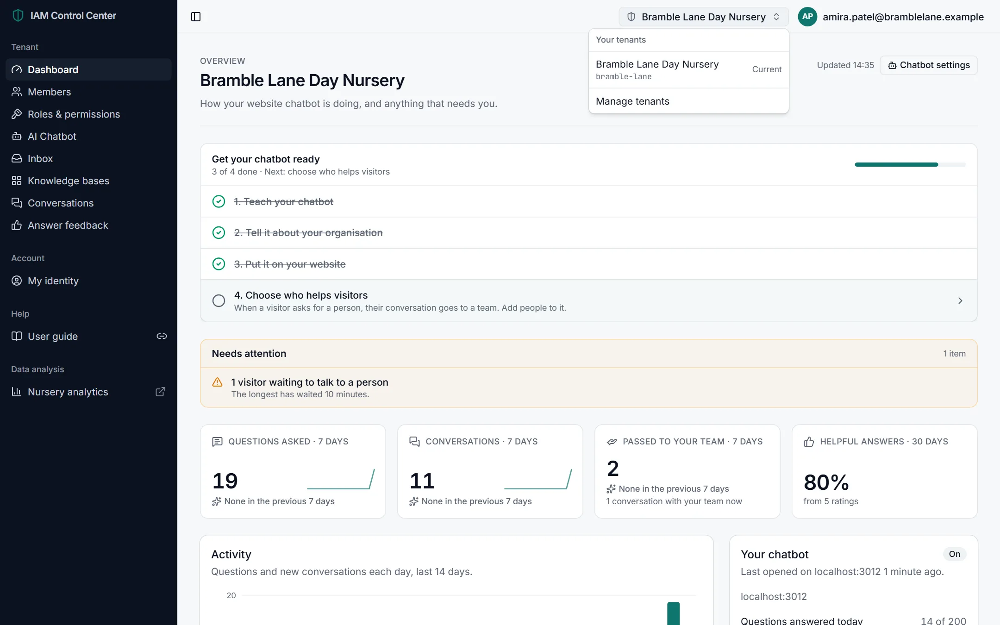
We recommend doing these five things in your first session:
- Secure your account. Turn on an authenticator app in My identity.
- Follow the setup checklist at the top of the Dashboard. It shows exactly what is left to do. Your first day walks you through it.
- Check what your chatbot knows in Knowledge bases, and add anything missing.
- Describe your organisation on the Company and Behaviour tabs of the AI Chatbot page.
- Test it with the questions your customers ask most (see Testing your chatbot).
Finding your way around
The dark menu on the left takes you to every part of the portal. Click the panel icon at the very top of the page to hide or show it.
| Menu item | What it's for |
|---|---|
| Dashboard | How your chatbot is doing today, and anything that needs you. Chapter 5 |
| Members | The people in your organisation who can use the portal. Chapter 11 |
| Roles & permissions | What each person is allowed to do. Chapter 11 |
| AI Chatbot | Your chatbot's name, behaviour, tone, website installation and limits. Chapter 6 |
| Inbox | Conversations where a visitor asked to speak to a person, and your teams. Chapter 9 |
| Knowledge bases | The documents and web pages your chatbot answers from. Chapter 7 |
| Conversations | The full history of chats with your chatbot. Chapter 9 |
| Answer feedback | Every 👍 and 👎 visitors and staff gave to answers. Chapter 9 |
| My identity | Your own account: password, two-step sign-in and sessions. Chapter 12 |
| Help → User guide | This guide. It opens in a new tab; the link icon beside it copies a link you can email to anyone. Sharing this guide |
| Data analysis | If your provider has set one up, a link to an external analytics tool. It opens in a new tab. |
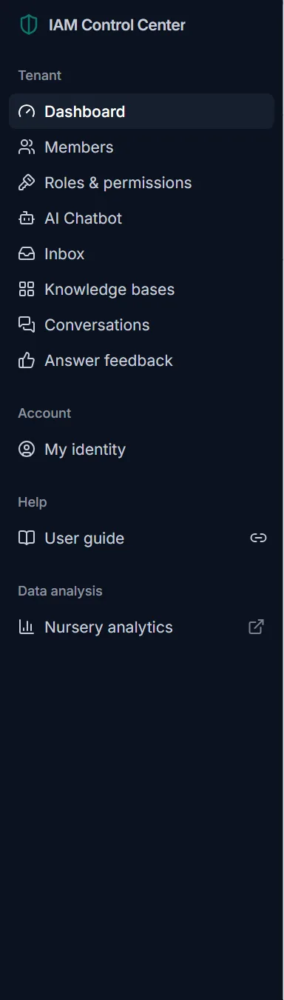
Some menu items may be missing
You only see the pages your role allows. If a colleague can see a page you can't, ask your organisation's owner to review your role (see Roles).
Security recommendations
- Use a long, unique password — at least 12 characters, and never one you use elsewhere.
- Turn on two-step sign-in with an authenticator app (My identity).
- Never share your account. Give each colleague their own membership instead (Members).
- Sign out on shared computers, and use Sign out everywhere if you think your password may have been seen.
- Remove access promptly when someone leaves your organisation (Revoke access).
Tenant Admin Dashboard
Your home page: how the chatbot is doing, and anything that needs your attention.
- Menu
- Dashboard
- Purpose
- A single overview of setup progress, warnings, activity, usage and gaps in your content.
- Refreshes
- Automatically. The time of the last update is shown at the top right.
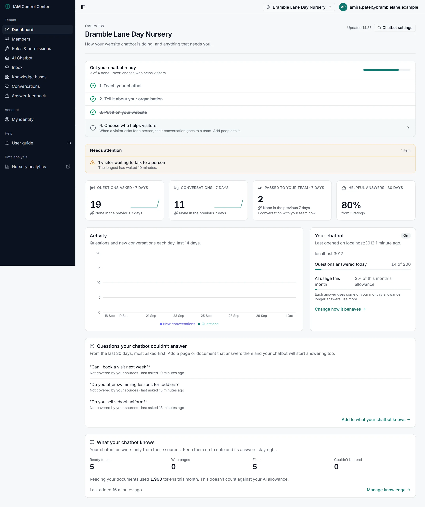
Get your chatbot ready (setup checklist)
Until setup is complete, a checklist sits at the top of the dashboard. Each finished step is ticked and crossed through; click any unfinished step to go straight to the page that completes it.
| Step | What "done" means |
|---|---|
| 1. Teach your chatbot | At least one document or web page is ready to use. See Knowledge bases. |
| 2. Tell it about your organisation | You've described your organisation on the chatbot's Company tab. |
| 3. Put it on your website | A real page on your website has loaded the chatbot. See Putting it on your website. |
| 4. Choose who helps visitors | A team exists with at least one person in it, so visitors can be handed to a colleague. See Teams. |
Needs attention
This amber panel lists problems that affect your visitors, most important first. When there's nothing to fix it tells you everything is fine. Typical items:
- "Your chatbot is hidden on <website>" — a page tried to show your chatbot, but that website address isn't in your allowed list. If it's your site, allow it (see Putting it on your website).
- "1 team with no one in it" — visitors aren't offered that team until you add someone to it (see Teams).
- Usage warnings — you're approaching today's question limit or this month's AI allowance (see Usage and allowances).
- Documents that couldn't be read — see Processing status.
Key figures
Four cards summarise recent activity. Under each number, a small line compares it with the previous period, and a mini chart shows the trend.
| Figure | What it means | What to look for |
|---|---|---|
| Questions asked · 7 days | How many questions visitors asked your chatbot in the last 7 days. | Growth means your chatbot is being used. A sudden drop may mean it was removed from your website. |
| Conversations · 7 days | How many separate chats started in the last 7 days. One conversation can contain several questions. | Compare with questions: many questions per conversation usually means visitors are engaged. |
| Passed to your team · 7 days | How many conversations were handed to a person, plus how many are with your team right now. | A rising number can mean your content is missing something visitors need. |
| Helpful answers · 30 days | Of all the 👍 and 👎 ratings in the last 30 days, the percentage that were 👍. | Read the 👎 ratings in Answer feedback to see what went wrong. |
Looking for token usage, AI cost or user activity?
Token usage appears as AI usage this month on the chatbot card below, as a percentage of your allowance. AI cost isn't shown in money, because your AI usage is included in your plan (see AI cost). Visitor activity is shown by the questions and conversations figures.
Activity chart
Shows questions and new conversations for each of the last 14 days. Hover over (or tap) a day to see its exact numbers.
Your chatbot card
| Item | What it means |
|---|---|
| On / Off | Whether the AI is currently answering visitors (see Turning it on or off). |
| Last opened on… | The website where your chatbot was last loaded, and when. Confirms it's live on your site. |
| Questions answered today | Today's AI answers against your daily limit, for example 14 of 50. When the limit is reached, visitors are told to try again later or to speak to a person. |
| AI usage this month | How much of this month's AI allowance you've used, as a percentage. Longer answers use more. |
| Change how it behaves | A shortcut to the AI Chatbot page. |
Questions your chatbot couldn't answer
This is the most useful list on the dashboard. It shows questions from the last 30 days that your content didn't answer, most frequently asked first, with how often each was asked.
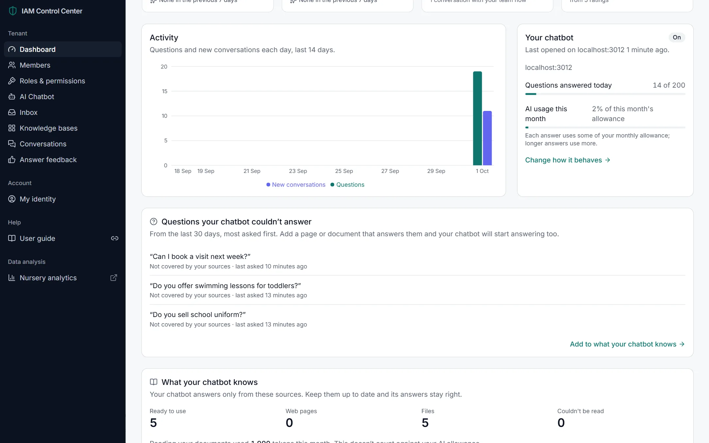
- Read the top few questions. Ask yourself: should our chatbot be able to answer this?
- If yes, add the answer to a document or web page, and add it to your knowledge base (Add to what your chatbot knows).
- Test the question again in a new chat (see Testing). Once it's answered from your sources, it stops appearing here.
- If no (for example, "What is the capital of Australia?"), you don't need to do anything: the chatbot correctly declined to answer from general knowledge.
What isn't listed here
Greetings, small talk and questions about the chatbot itself ("who are you?") are left out, and so are questions it declined because of your own Avoid rules, since those were refused on purpose.
What your chatbot knows
A summary of your content: how many documents are ready to use, how many are web pages and files, and how many couldn't be read. It also shows how many tokens reading your documents used this month, which doesn't count against your AI allowance. Click Manage knowledge to open Knowledge bases.
Your AI chatbot (assistant management)
Decide who your chatbot is, how it behaves, where it appears, and when it fetches a colleague.
- Menu
- AI Chatbot
- Purpose
- One place for everything about your chatbot, arranged in tabs: Identity, Behaviour, Tone & style, Company, Reply experience, and Handoff & limits.
- Saving
- Each tab has its own Save button. Changes apply to the next question visitors ask.
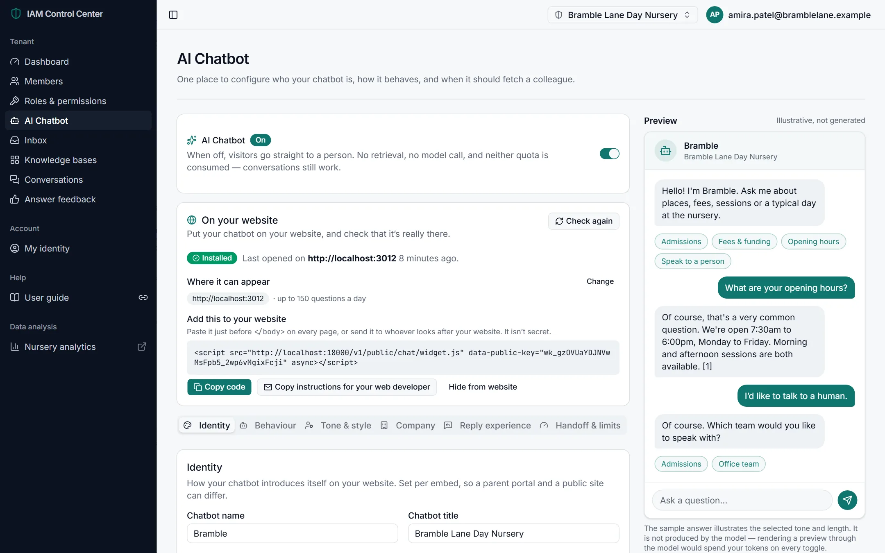
Who controls what
Your chatbot is shaped by two parties. Knowing who controls what saves time when something needs changing.
Name, title, avatar and greeting · role and topics to avoid · personality and answer length · company description · quick replies and location · handoff to your team · your own daily limit · time zone · how long conversations are kept · what it knows.
The AI model and how it's powered · the core safety rules (answering only from your sources, citations, privacy) · your assistant type (the kind of organisation it speaks for) · your plan limits (knowledge bases, chatbots, daily and monthly usage).
Why there's no "AI model" setting
The AI model, its version and its safety rules are chosen and maintained by your platform provider, so every organisation benefits from improvements without having to reconfigure anything. Your settings sit on top of those rules: they can make your chatbot more careful, but can't switch off grounding, citations or privacy protections.
Turning your chatbot on or off
The AI Chatbot switch at the top of the page turns the AI on or off for all your visitors, immediately.
- On — the AI answers visitors' questions.
- Off — visitors go straight to a person. The chat bubble still works and conversations still arrive in your Inbox, but no AI answers are given and no allowance is used.
Before turning the AI off
Make sure a team with people in it is ready to answer (see Teams), otherwise visitors will be waiting for a reply.
Putting your chatbot on your website
The On your website card shows whether your chatbot is really on your site and gives you the code to add it.
| Item | What it means |
|---|---|
| Status badge | Installed (a page loaded it recently) · Not seen recently · Not installed · Turned off. Click Check again to refresh. |
| Where it can appear | The website addresses allowed to show your chatbot, and its daily question limit. For security, it stays hidden on any other website. Click Change to edit the list. |
| Add this to your website | One line of code to paste into your website. It isn't secret. |
| Copy code | Copies the line so you can paste it. |
| Copy instructions for your web developer | Copies ready-written instructions you can email to whoever looks after your website. |
| Hide from website | Stops the chatbot appearing on your website, without deleting anything. |
- Check the allowed address. Under Where it can appear, make sure your website's address is listed (for example
https://www.yourcompany.com). If not, click Change and add it. - Copy the code. Click Copy code, or Copy instructions for your web developer if someone else manages your site.
- Paste it into every page just before the closing
</body>tag. Most website builders have a "custom code" or "footer scripts" setting for this. - Open your website and look for the round chat button in the bottom-right corner.
- Back in the portal, click Check again. The status changes to Installed, and the dashboard's setup step 3 is ticked.
"A page on … tried to show your chatbot"
If this appears, a website not in your list tried to load your chatbot and it stayed hidden there. If that address is yours (for example a new domain or a staging site), click Allow <address>. If you don't recognise it, leave it: your chatbot stays hidden there.
Changes reach your website within an hour
Visitors' browsers keep a copy of the chatbot for up to an hour. Also, the chat window remembers a visitor's ongoing conversation. To see a change straight away, open your website in a private (incognito) window.
Identity tab
How your chatbot introduces itself on your website.
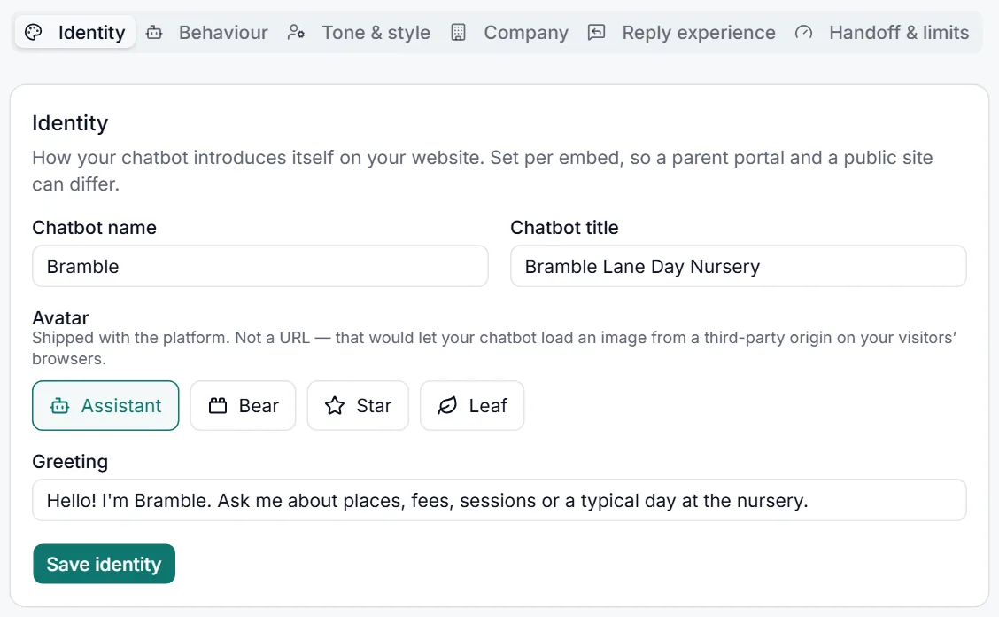
| Field | Purpose | Recommended setting |
|---|---|---|
| Chatbot name | The name shown at the top of the chat window, for example "Bramble" or "Nursery Helper". | Short and friendly. Say it's an assistant, so visitors know they're talking to an AI. |
| Chatbot title | A short line under the name describing what it helps with. | Three to five words, such as "Places, fees & sessions". |
| Avatar | The small picture next to the name: Assistant, Bear, Star or Leaf. | Pick the one that best suits your brand. Images are built in, for your visitors' privacy. |
| Greeting | The first message visitors see when they open the chat. | One welcoming sentence and a hint of what to ask, e.g. "Hello! Ask me about places, fees, sessions or a typical day at the nursery." |
Click Save identity. The Preview panel on the right shows the result straight away.
About the preview
The preview is illustrative: its sample conversation isn't generated by the AI (that would use your allowance every time you changed a setting). To see real answers, test your chatbot.
Behaviour tab
Your chatbot's job description: what it's for, and what it must never do.
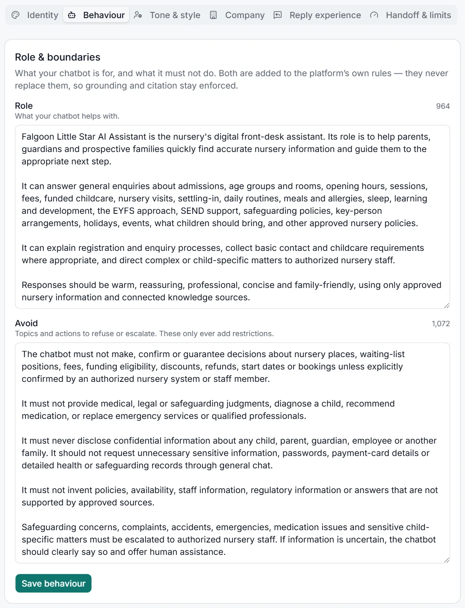
| Field | Purpose | Recommended setting |
|---|---|---|
| Role | What your chatbot helps with, and who it helps. It starts pre-filled with a sensible default for your type of organisation. | Keep the default, then add the specific topics your visitors ask about (for example "places, fees, funded hours, sessions and how to book a visit"). |
| Avoid | Topics and actions it must refuse or pass to a person. | List anything your staff must decide, e.g. "Never promise a place or confirm a start date — direct parents to the office." |
Writing good instructions
- Write in plain sentences, as you would brief a new receptionist.
- Be specific: "Don't discuss staff salaries" works better than "Be careful with sensitive topics".
- Don't put facts here (prices, dates, phone numbers). Put facts in your knowledge base, where they can be cited and kept up to date.
These rules can only add caution
Your Role and Avoid instructions are added to the platform's own rules; they never replace them. So your chatbot always answers only from your sources and always shows where each answer came from, whatever you write here.
Tone & style tab
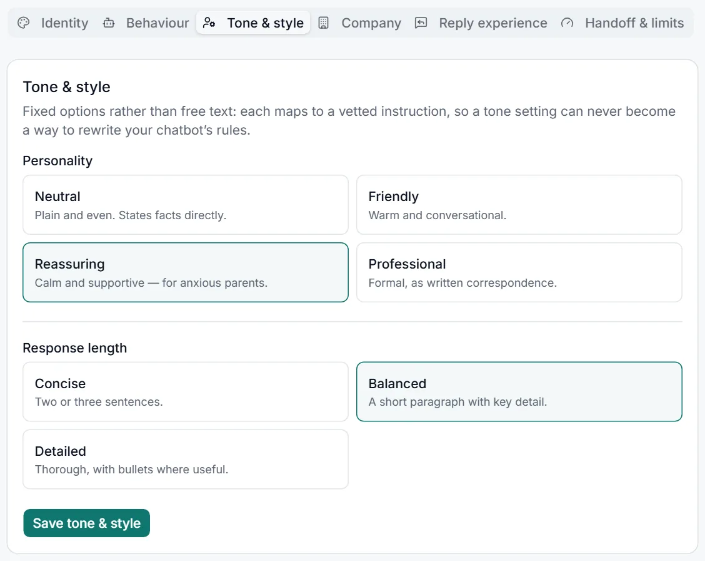
| Setting | Options | Recommended setting |
|---|---|---|
| Personality | Neutral — plain and even · Friendly — warm and conversational · Reassuring — calm and supportive · Professional — formal, like written correspondence. | Friendly for most public websites; Professional for business customers; Reassuring if visitors are often anxious. |
| Response length | Concise — two or three sentences · Balanced — a short paragraph with key detail · Detailed — thorough, with bullet points where useful. | Balanced. Choose Detailed if visitors often ask for lists or comparisons, such as every room's fees side by side. |
These are fixed options rather than free text on purpose, so a tone setting can never change your chatbot's rules. Click Save tone & style.
Company tab
Background your chatbot draws on to understand who it speaks for.
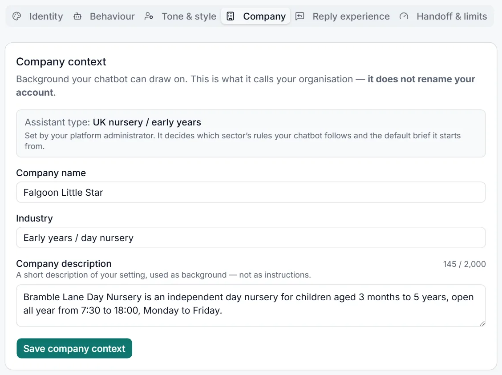
| Field | Purpose | Recommended setting |
|---|---|---|
| Assistant type (read-only) | The kind of organisation your chatbot answers for, for example UK nursery / early years or Education & training provider. It sets which industry-specific rules apply and the defaults you start from. | Set by your platform provider. If it doesn't match your organisation, ask them to change it — see troubleshooting. |
| Company name | What the chatbot calls your organisation. It doesn't rename your account. | Your public trading name. |
| Industry | Your sector, in a few words. | Keep the default unless it's clearly wrong. |
| Company description | A short description of your organisation (up to 2,000 characters), used as background. | Two to four short paragraphs: who you are, who you serve, what you offer. Leave facts like prices to your knowledge base. |
Click Save company context. Saving this completes setup step 2 on the dashboard.
Reply experience tab
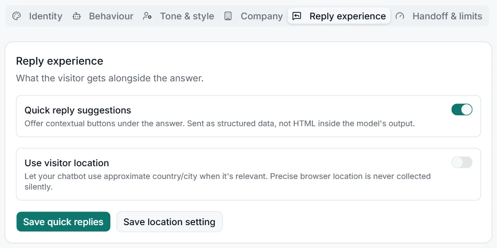
| Setting | Purpose | Recommended setting |
|---|---|---|
| Quick reply suggestions | Shows buttons with common questions (for example "Admissions", "Fees & funding", "Opening hours") so visitors can start with one click. "Speak to a person" is added only when a transfer is really possible. | On. Visitors ask more questions when they have a starting point. |
| Use visitor location | Lets the chatbot use a visitor's approximate country or city when relevant. Precise location is never collected. | On only if location matters to your answers (for example regional prices). Otherwise off. |
Handoff & limits tab
When your chatbot should fetch a colleague, how many AI answers it may give each day, and how long conversations are kept.
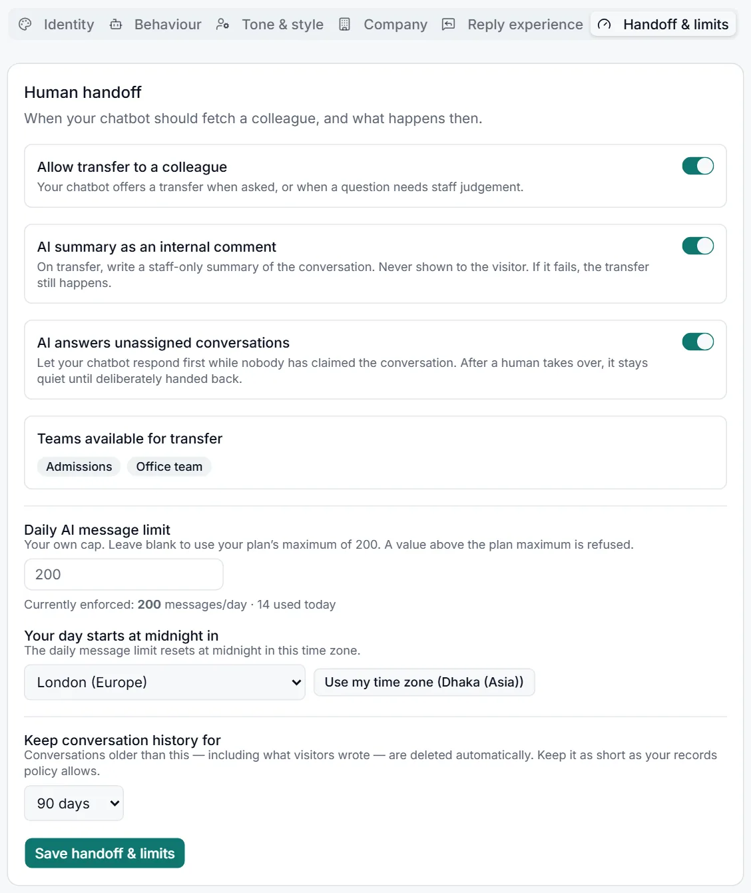
| Setting | Purpose | Recommended setting |
|---|---|---|
| Allow transfer to a colleague | Lets the chatbot offer a transfer to a person when a visitor asks, or when a question needs staff judgement. | On, as long as someone checks the Inbox. |
| AI summary as an internal comment | On transfer, writes a staff-only summary of the conversation so your colleague doesn't have to read it all. Visitors never see it. | On if your team handles many transfers. |
| AI answers unassigned conversations | Lets the chatbot keep answering while a transferred conversation waits for a colleague. Once someone takes over, the AI stays quiet until handed back. | On, so visitors aren't left waiting in silence. |
| Teams available for transfer | The teams visitors can choose between. Manage them in Inbox → Teams. | At least one team with at least one person in it. |
| Daily AI message limit | Your own cap on AI answers per day. Leave blank to use your plan's maximum; a value above it is refused. Below the box you'll see the limit being enforced and how many were used today. | Blank, unless you want to hold usage below your plan's maximum. |
| Your day starts at midnight in | The time zone your daily limit resets in. Use my time zone fills in your computer's time zone. | Your organisation's local time zone, for example London (Europe). |
| Keep conversation history for | How long conversations (including what visitors wrote) are kept before they're deleted automatically. | As short as your records policy allows; 30 days suits most organisations. |
Click Save handoff & limits.
Deleted conversations can't be recovered
Shortening the retention period deletes older conversations at the next automatic clean-up. Ratings and the audit trail are kept.
Knowledge base management
The most important part of running a good chatbot: giving it accurate, up-to-date content.
What is a knowledge base?
The knowledge base contains the information your AI assistant uses to answer customer questions.
Think of it as a library you build for your chatbot. When a visitor asks a question, the chatbot searches your library, finds the most relevant passages, and writes an answer from them, showing numbered references to the pages it used. If the library doesn't contain the answer, the chatbot says so instead of guessing.
Files (PDF, Word, Excel, PowerPoint…) and web pages.
Reads each one, splits it into short passages, and makes them searchable.
Finds the best passages for each question and answers from them, with sources.
Your content stays yours
Each knowledge base is searched on its own and is never mixed with another organisation's content.
The knowledge base list
- Menu
- Knowledge bases
- Purpose
- Lists your knowledge bases and gives you every action for each one.
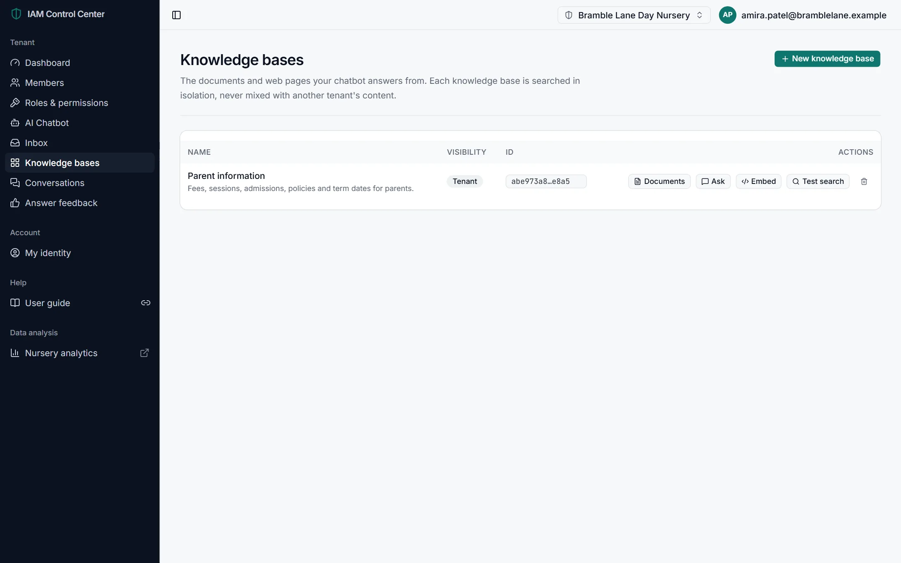
| Action | What it does |
|---|---|
| Documents | Add, check and remove files and web pages. Upload documents |
| Ask | Ask this knowledge base a question from the portal. Ask from the portal |
| Embed | See the website chatbot that answers from this knowledge base, and its embed code. Putting it on your website |
| Test search | See which pages the chatbot would use for a question, without generating an answer. Test search |
| Bin icon | Delete the knowledge base. Delete a knowledge base |
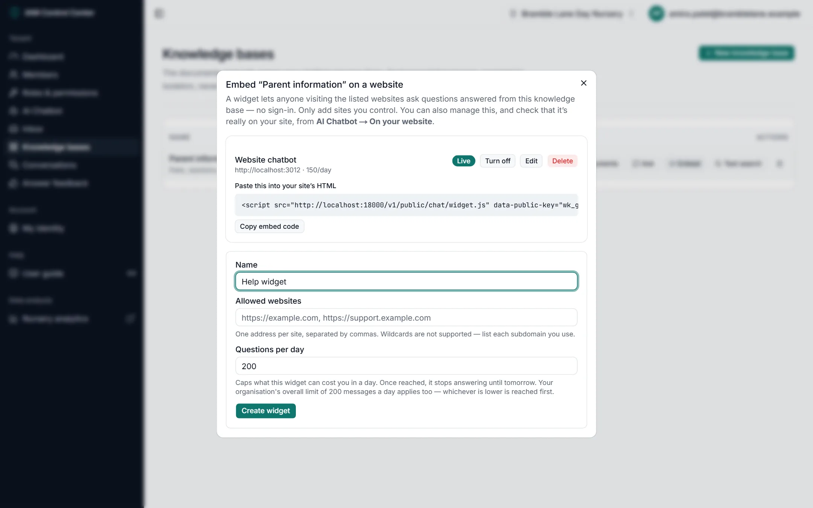
Create a knowledge base
Most organisations need only one knowledge base. Create another if you want to keep a separate set of content, for example for a different website.
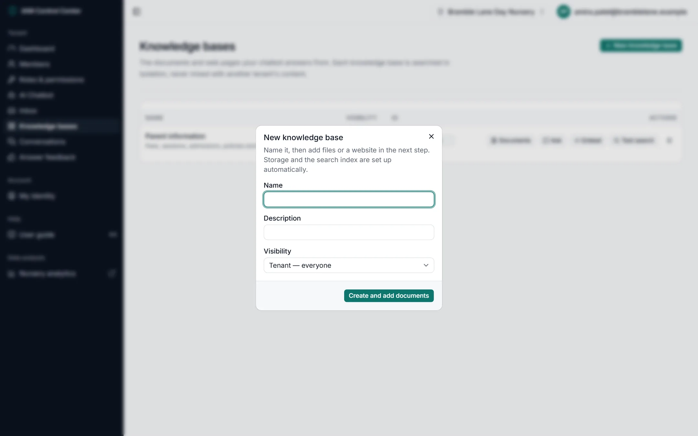
- Click New knowledge base at the top right of the Knowledge bases page.
- Enter a name you'll recognise, such as "Parent information" or "Policies".
- Add a short description (optional) saying what it contains.
- Leave Visibility as Tenant — everyone so everyone in your organisation can use it (see Who can see a knowledge base).
- Click Create and add documents. The documents window opens straight away so you can add content.
Plan limits
Your plan sets how many knowledge bases you can have. At the limit, the New knowledge base button is disabled with an explanation. Ask your platform provider to raise the limit, or delete one you no longer need.
Who can see a knowledge base
Visibility decides which people in your organisation can see and use a knowledge base in the portal. It does not affect your website: a website chatbot always answers from the knowledge base it's connected to, whatever its visibility.
| Visibility | Who can see and use it in the portal | When to use it |
|---|---|---|
| Tenant — everyone | Every member of your organisation. | Almost always. This is the right choice for content your chatbot answers from. |
| Restricted | Only the person who created it, and administrators who can manage every knowledge base. | Content you're still preparing, or a test knowledge base. |
| Department / Team | Members your platform provider has placed in that department or team, plus the creator and administrators. | Only if your provider has set departments up for you. These options ask for an ID that only your provider can give you. |
If in doubt, choose "Tenant — everyone"
You can't yet place members into departments or teams from the portal, so a Department or Team knowledge base is usually visible only to you and your administrators. Colleagues will find it missing from their list.
Upload documents
- Open the documents window. On the Knowledge bases page, click Documents next to your knowledge base.
- Add your files. Drag them onto the area marked Drop files here, or click browse to choose them. You can add several at once.
- Watch them process. Each file appears in the list immediately with its own progress bar, and an overall bar tracks the whole batch. You can close the window: processing carries on.
- Check they're ready. Each file should end with a green tick, Ready, and a number of passages searchable.
| Supported | Details |
|---|---|
| File types | PDF, Word, Excel, PowerPoint, HTML, email, CSV, JSON, XML, plain text and images (scanned pages and photos are read with text recognition). |
| Size | Up to 50 MB per file. |
| Uploading | Files upload two at a time. You can cancel a file while it's still sending. |
What makes a good document
- Clear headings and one topic per section.
- Real text rather than pictures of text (text files are faster and more accurate than scans).
- Up-to-date facts only. Remove old price lists instead of adding new ones beside them.
- Not password-protected.
Add web pages
Instead of uploading files, you can point the portal at pages on your website. It fetches each page, keeps the text and makes it searchable, just like a file.
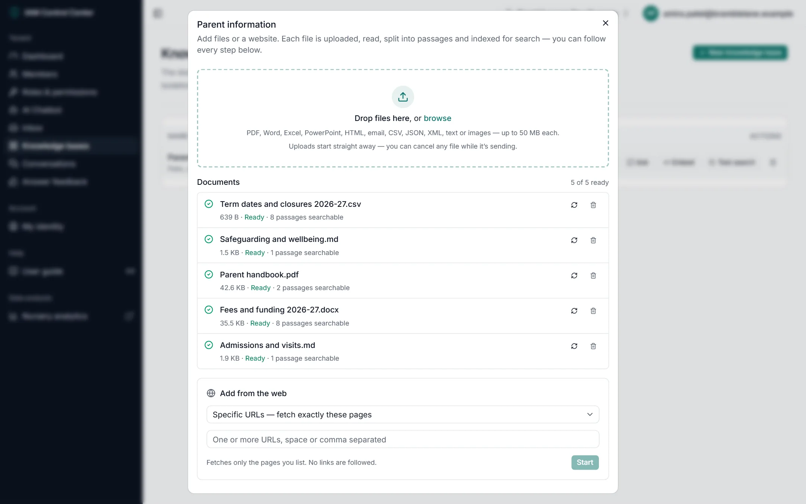
- Open the documents window and scroll down to Add from the web.
- Choose a mode:
- Specific URLs — fetch exactly these pages. Paste one or more page addresses, separated by spaces or commas. No links are followed. Best for full control.
- Entire website — follow links from one page. Paste one starting address; the portal follows links within the same site, up to your platform's page and depth limits.
- Click Start. The source appears below with its progress, for example "25 of 25 pages", and the date it was last fetched.
- Check the result. Each fetched page appears in the document list and should become Ready.
Choose pages that answer questions
Fees and sessions pages, admissions information, FAQs, opening hours and contact pages are ideal. Leave out blogs, news archives and legal boilerplate unless visitors ask about them: extra pages can make answers less precise.
Add written text
There's no box to type text straight into the knowledge base. To add information that isn't on your website or in an existing document (for example a new FAQ), write it in a document and upload it:
- Write the content in Word, Google Docs or a plain text file. Use a heading for each question or topic.
- Save it as
.docx,.pdfor.txt, with a clear name such as "Frequently asked questions 2026". - Upload it as described in Upload documents.
A question-and-answer document works best
Write each entry as the question visitors actually ask, followed by a short, complete answer. This is the fastest way to fix items on the dashboard's couldn't answer list.
Check processing status
Every file and web page goes through the same stages. The documents window shows the current stage and a percentage for each one.
| Stage | What's happening |
|---|---|
| Uploading | The file is being sent from your computer (you can still cancel it). |
| Queued | Received, and waiting its turn to be read. |
| Extracting | Reading the text out of the file. |
| Chunking | Splitting the text into short passages. |
| Embedding | Making each passage searchable by meaning, shown as "64 of 114 passages". |
| Indexing | Adding the passages to your knowledge base's search. |
| Ready | Done. The chatbot can now answer from it. The number of passages searchable is shown. |
| Failed | It couldn't be processed. The stage where it failed and the reason are shown, with a Retry button. |
Most documents are ready in under a minute. Very large or scanned documents can take a few minutes.
See exactly what was read
Click a document's name in the list to see the passages the portal extracted from it. This is the quickest way to find out why a document isn't helping, for example if a web page captured a cookie banner instead of the article.
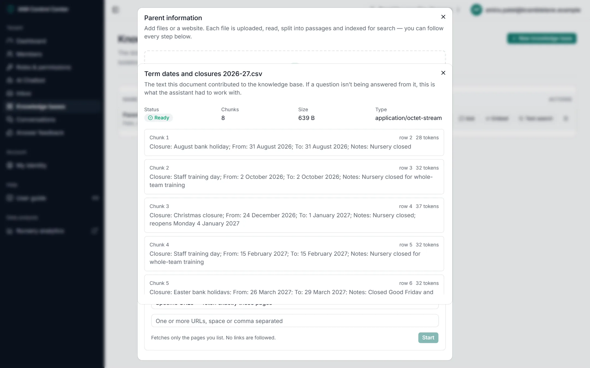
Update content
| To update… | Do this |
|---|---|
| A file whose content changed | Upload the new version, check it's Ready, then delete the old one (see below). Keeping both lets the chatbot find conflicting facts. |
| Web pages that changed | In Add from the web, click the refresh icon next to the web source to fetch it again. Pages are refreshed in place, not duplicated. If a page has disappeared from your site, its old copy is kept until you delete it. |
| A document that failed or reads badly | Click the refresh icon on the document's row to process it again. For a failure, fix the cause first (see troubleshooting). |
Delete a document
- Open the documents window for the knowledge base.
- Click the bin icon on the document's row.
- Confirm. The document is removed from search immediately, and the chatbot stops using it for new answers.
Test search
Test search shows which of your pages the chatbot would draw on for a question, without generating an answer. It's the quickest way to check whether your content covers a topic.
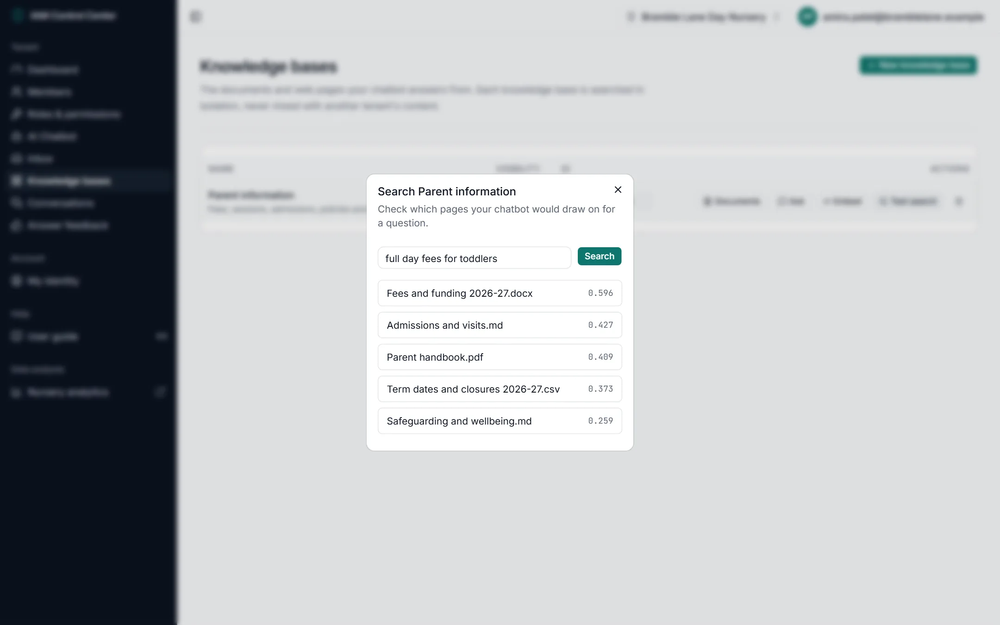
- Click Test search next to the knowledge base.
- Type a question the way a visitor would, and click Search.
- Read the results. The best-matching pages come first. The number beside each is a relevance score; only compare scores within one search.
Reading the results
If the right page is at or near the top, the chatbot has what it needs. If it's missing, add a page or document that covers the topic. Test searches don't use your AI allowance.
Delete a knowledge base
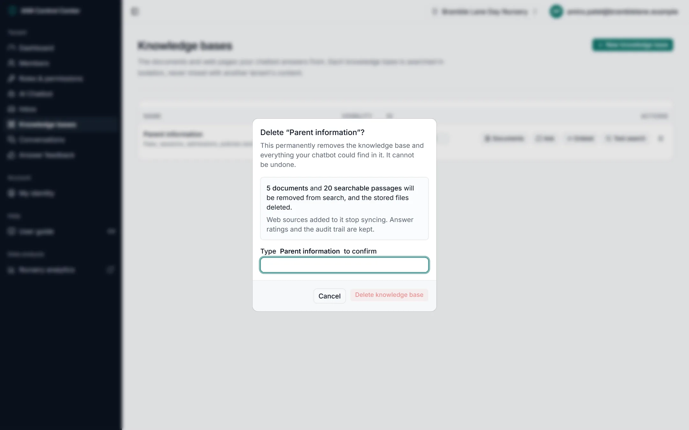
- Click the bin icon on the knowledge base's row.
- Read what will be removed: the window says exactly how many documents and passages go, and what is kept (answer ratings and the audit trail).
- Type the knowledge base's name to confirm, then click Delete knowledge base.
This can't be undone
Deleting a knowledge base removes all its documents and web pages permanently. The portal refuses to delete one that your website chatbot still answers from, or while anything in it is still processing, and tells you why.
Testing your AI assistant
Check your chatbot's answers before your visitors do, and after every change to its content.
Ask from the portal
The quickest test: ask a knowledge base a question without leaving the portal.
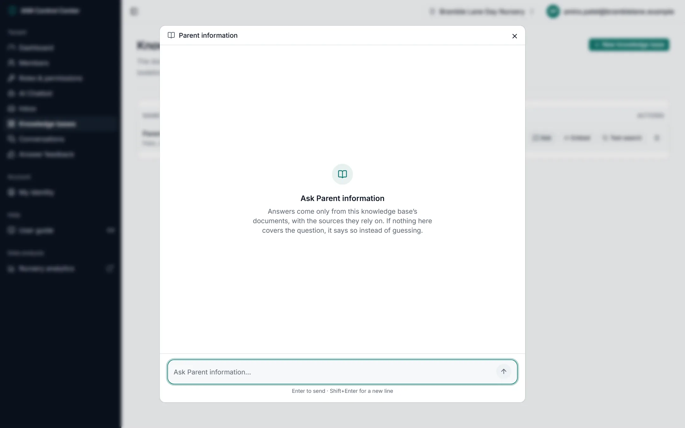
- Go to Knowledge bases and click Ask next to your knowledge base.
- Type a question and press Enter (Shift + Enter adds a new line).
- Read the answer and its sources. You can copy it, generate it again, or rate it.
Good to know
In the Ask window, each question is answered on its own; it doesn't remember earlier questions. Questions asked here count towards your daily limit and AI allowance, just like your visitors' questions.
Test it exactly as a visitor sees it
The most realistic test is the chatbot on your own website (or a test page your provider gives you).
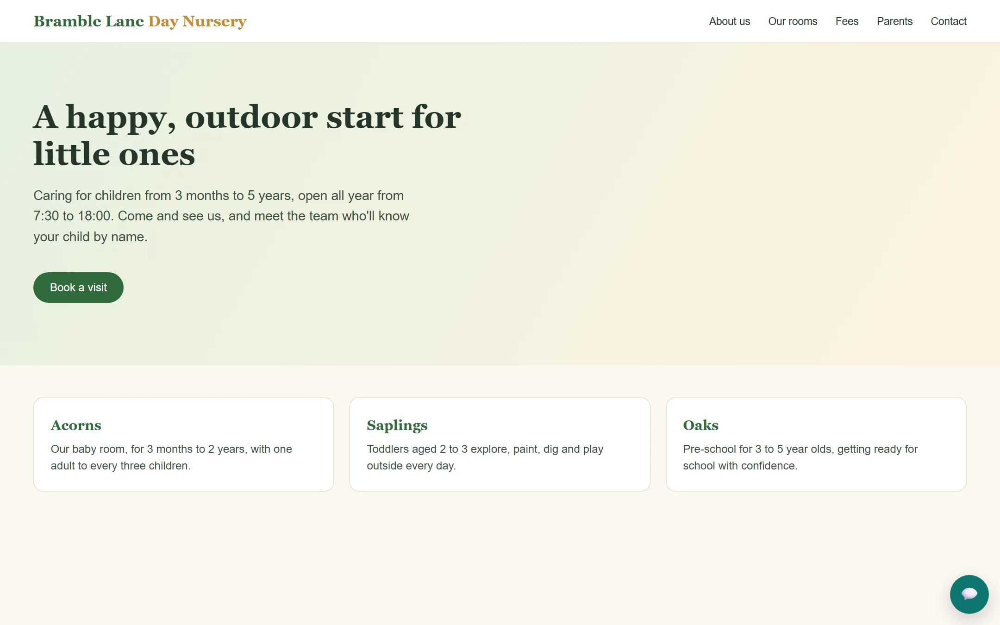
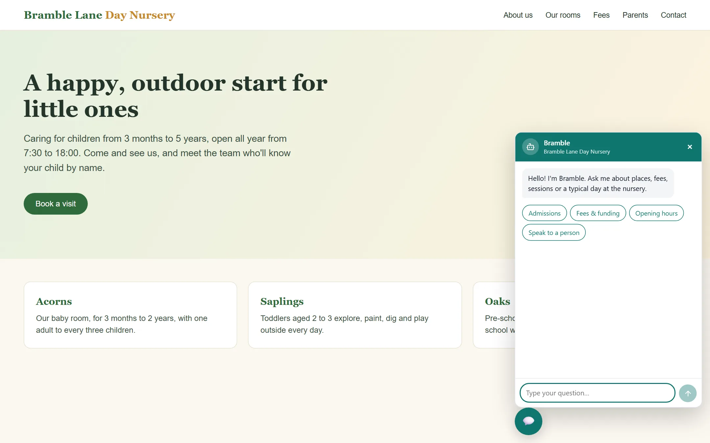
- Open your website in a private (incognito) window. This makes sure you see your latest settings and start a fresh conversation.
- Click the round chat button in the bottom-right corner.
- Ask a real question, for example: "How much is a full day for a 2 year old?"
- Check the answer using the steps below.
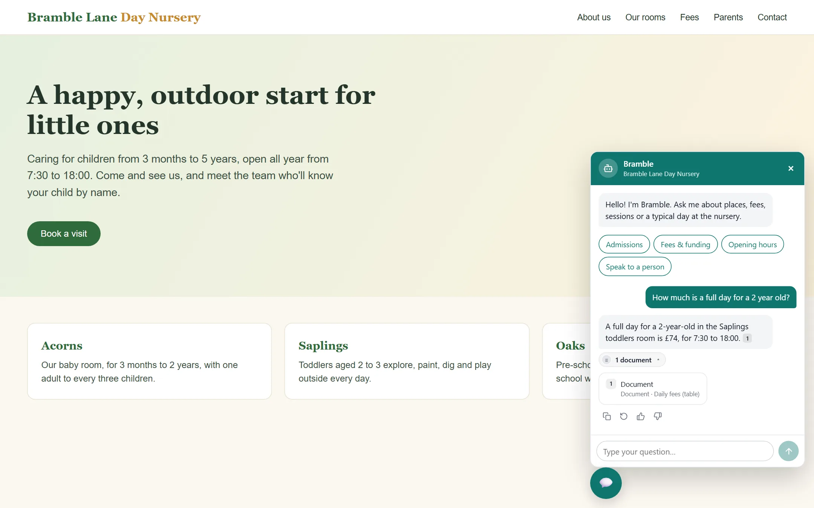
Question: "How much is a full day for a 2 year old?"
Expected behaviour: the assistant answers using your knowledge only: "A full day for a 2-year-old in the Saplings toddler room is £74, for 7:30 to 18:00", with a citation number (1) after the fact and 1 document underneath. Click that to see which part of your fees document it used.
Good to know: visitors see the titles of web pages, but an uploaded file is shown only as "Document" and the part used (for example "Daily fees (table)"). That's deliberate: a file name can reveal internal information.
Checking an answer
- Is it correct? Compare it with your own information.
- Does it cite sources? Factual answers carry small numbers such as
1. Click N web pages or N documents to see them. - Are the sources right? Open them: are they the pages you'd expect?
- Is it the right length and tone? If not, adjust Tone & style.
- Rate it with 👍 or 👎. Ratings appear in Answer feedback.
When the chatbot says it can't confirm something
This is correct behaviour when your content doesn't contain the answer: the chatbot never fills gaps with general knowledge. The question is added to the dashboard's couldn't answer list so you can add the missing information.
Improving answers
| If the answer… | Do this |
|---|---|
| says it can't confirm, but the answer is in your content | Run a test search. If the right page isn't near the top, make it clearer (headings, question-style wording) or add a focused FAQ document. If the chatbot says your sources belong to a different organisation, see this troubleshooting entry. |
| is wrong or out of date | Find the source it cited, correct or replace it (Update content), then ask again in a new chat. |
| cites unhelpful pages | Remove pages that add noise (for example blogs or legal pages), or add a page dedicated to the topic. |
| is too long or too short | Change Response length on the Tone & style tab. |
| strays into a topic it shouldn't | Add a rule to Avoid on the Behaviour tab. |
Keep a test list
Write down the 10–20 questions your customers ask most. Ask them all after every significant content change. It takes five minutes and catches most problems before your visitors do.
Conversation management
Review what visitors ask, how your chatbot answered, how it was rated, and handle requests for a person.
Conversation history
- Menu
- Conversations
- Purpose
- Every chat with your website chatbot, including any your team took over.
The page opens on Only mine (your own conversations). To review visitors' chats, click Show all conversations, or the All conversations button.
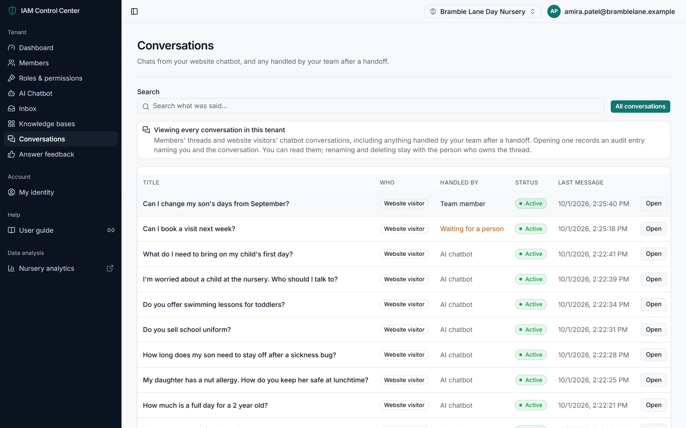
| Column | What it means |
|---|---|
| Title | The conversation's first question. |
| Who | Website visitor (anonymous visitors to your site) or the member who asked. |
| Handled by | AI chatbot, or the team or colleague it was handed to. |
| Status | Whether the conversation is active or finished. |
| Last message | When the most recent message was sent. |
Viewing conversations is recorded
Conversations contain what visitors wrote. Opening one records an entry in your organisation's audit trail, naming you and the conversation. Only open conversations you have a reason to review.
Searching conversations
Type a word or phrase into Search what was said… to find conversations containing it, for example "allergy" or "funding".
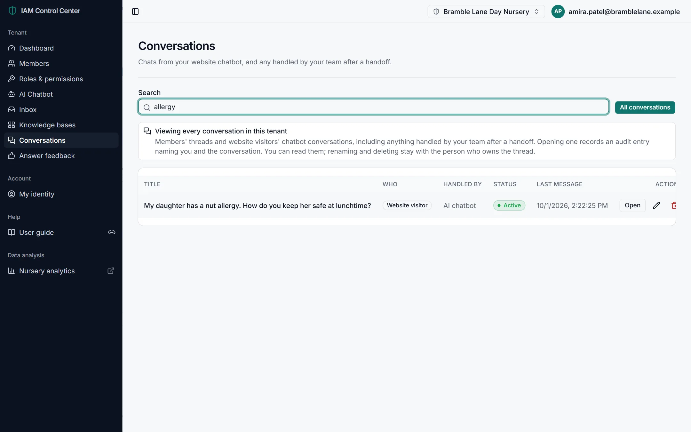
Reading a conversation
Click Open on a row to read the full conversation, oldest message first. You'll see the visitor's questions, the AI's answers with their citation numbers, and any messages from your team after a handoff.
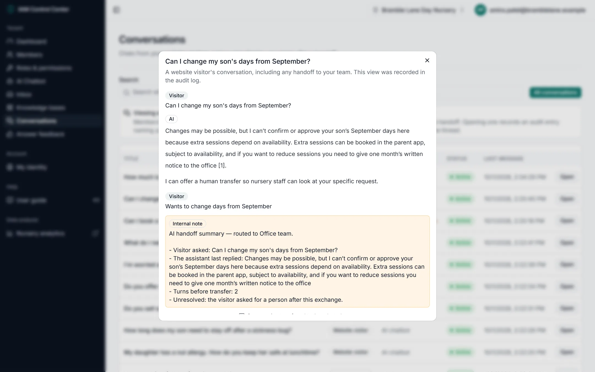
The pencil and bin icons on each row rename and delete a conversation. Only the person who owns a conversation can rename or delete it; visitors' conversations are deleted automatically after your retention period.
Answer feedback
- Menu
- Answer feedback
- Purpose
- Every 👍 and 👎 given to your chatbot's answers, on your website and in the portal.
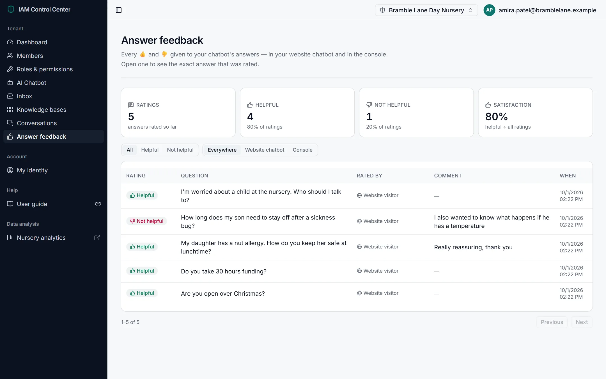
- Ratings, Helpful, Not helpful and Satisfaction at the top summarise all ratings. Satisfaction is helpful ratings divided by all ratings.
- Filters show only helpful or not-helpful ratings, and only those from your website or the portal.
- Click a rating to see the exact question and the exact answer that was rated, plus any comment the visitor left.
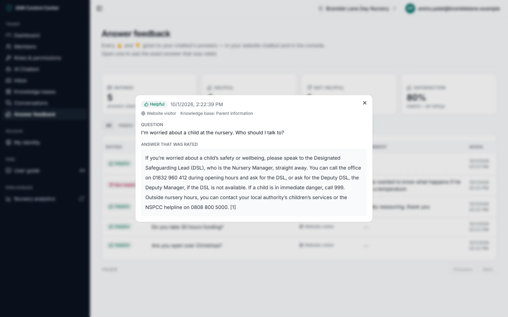
Why 👍 and 👎 matter
Ratings are the voice of your visitors. A 👎 is the clearest signal that an answer was wrong, unclear or unhelpful. Review every 👎 weekly: read the answer, find the source it used, and fix the content. A rising satisfaction score shows your improvements are working.
Inbox and human handoff
- Menu
- Inbox
- Purpose
- Conversations where a visitor asked to speak to a person, and the teams they can be passed to. Updates arrive live; no need to refresh.
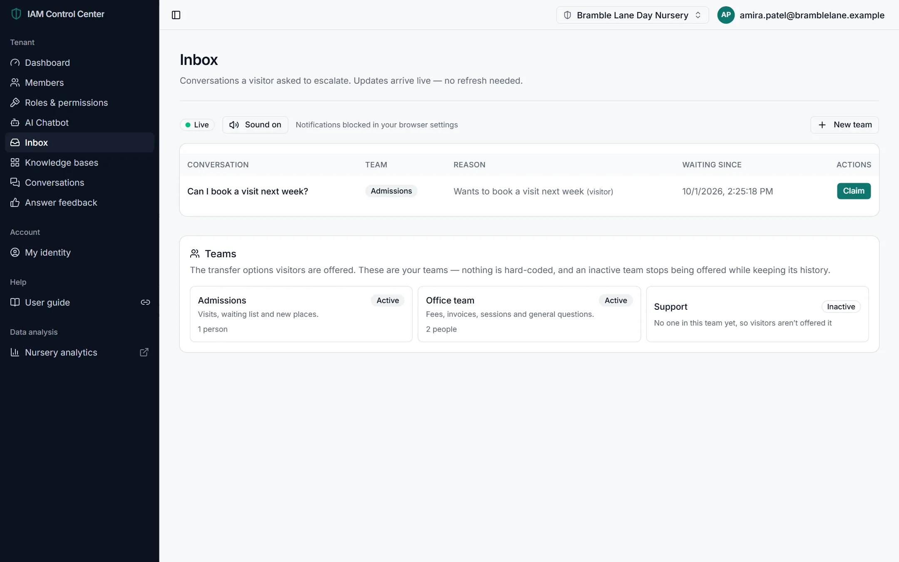
How a handoff works:
- A visitor asks for a person, or asks something that needs staff judgement. The chatbot offers the teams that have people in them.
- The visitor picks a team. The conversation appears in the Inbox of that team's members, live, with a sound if Sound on is enabled.
- A colleague claims it and replies. Only one person can claim a conversation, so two colleagues never answer the same visitor. Colleagues can also add internal notes that the visitor never sees.
- When finished, the colleague can hand the conversation back to the AI.
Don't miss a waiting visitor
Keep Sound on, and allow notifications if your browser asks. If the page says notifications are blocked, enable them in your browser's site settings.
Teams
Teams are the options visitors are offered when they ask for a person, for example "Admissions" or "Support". A team is only offered once it has at least one person in it.
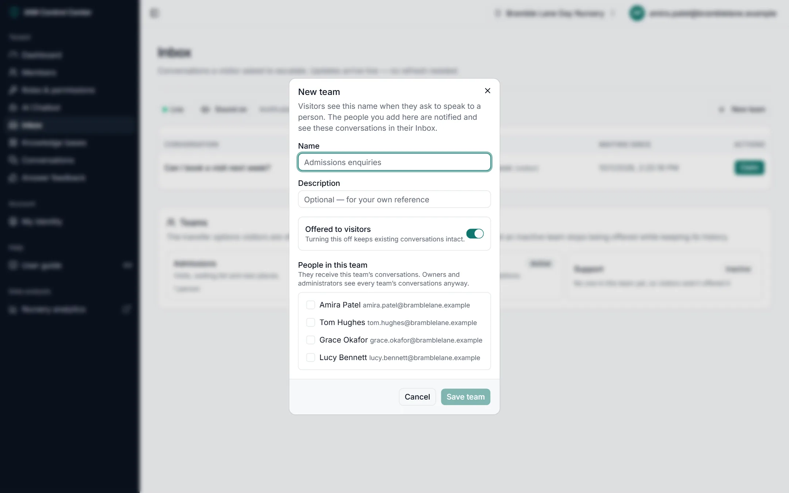
- Go to Inbox and click New team (or click an existing team to edit it).
- Enter a name visitors will understand, such as "Admissions", and a short description.
- Leave Offered to visitors on. Turning it off stops the team being offered but keeps its conversations.
- Tick the people who will answer this team's conversations.
- Click Save team. Setup step 4 on the dashboard is now ticked.
Who sees which conversations
Team members see their own teams' conversations. Owners and administrators see every team's conversations.
Analytics and usage monitoring
Understand how much your chatbot is used, how well it answers, and how close you are to your limits.
All analytics live on the Dashboard, with detail in Answer feedback and Conversations.
Every figure explained
| Figure | Where | What it tells you | Act when… |
|---|---|---|---|
| Questions asked (7 days) | Dashboard card | How much visitors use your chatbot. | It drops suddenly: check the chatbot is still on your website. |
| Conversations (7 days) | Dashboard card | How many visitors started a chat. | It's high but questions are low: visitors may not be getting useful first answers. |
| Passed to your team (7 days) | Dashboard card | How often visitors needed a person. | It rises: look for a pattern and add that content. |
| Helpful answers (30 days) | Dashboard card | Share of ratings that were 👍. | It falls: review 👎 ratings in Answer feedback. |
| Activity (14 days) | Dashboard chart | Daily questions and new conversations. | You see unusual peaks: for example after a marketing campaign. |
| Questions answered today | Chatbot card | AI answers today against your daily limit. | It regularly reaches the limit: raise your limit or ask for a larger plan. |
| AI usage this month | Chatbot card | Share of this month's AI allowance used. | It passes 80% early in the month. |
| Couldn't answer | Dashboard list | Questions your content doesn't cover. | A question is asked several times. |
| Ready / Web pages / Files / Couldn't be read | What your chatbot knows | The state of your content. | "Couldn't be read" is above zero. |
| Satisfaction | Answer feedback | Helpful ratings ÷ all ratings. | It trends down. |
Usage and allowances
Your plan includes two allowances:
AI questions per day
How many questions the AI answers per day. It resets at midnight in the time zone you choose. You can set a lower limit yourself.
AI usage per month
How much AI processing your answers can use each month, measured in tokens. It resets on the first of each month.
The dashboard warns you as you approach each limit, at 80%, 90%, 95% and 100%. When a limit is reached, visitors are told politely that the chatbot can't answer right now and can still ask for a person. Your content and settings are unaffected.
What doesn't count against your AI allowance
Reading your documents and web pages, and test searches. The dashboard shows how many tokens reading your documents used, for information only.
AI cost
The portal shows your AI use as a percentage of your allowance, not in money, because AI usage is included in your plan. You won't be charged extra for normal use within your allowance. For billing questions, or to change your plan, contact your platform provider.
Keeping usage efficient
- Choose Balanced rather than Detailed answers unless visitors need detail: shorter answers use less.
- Remove content visitors never ask about, so answers draw on fewer, more relevant pages.
- Use your own daily limit if you want predictable usage.
Reading the trends
- Week on week: each key figure compares the last 7 days with the 7 days before ("None in the previous 7 days" means there was no activity then).
- Day by day: the activity chart shows the last 14 days, so you can spot quiet days, busy days and the effect of changes.
- Quality over time: the satisfaction score compares the last 30 days of ratings.
User and permission management
Decide who in your organisation can use the portal, and what each person can do.
Members
- Menu
- Members
- Purpose
- Everyone with access to your organisation in the portal, their status and their roles.
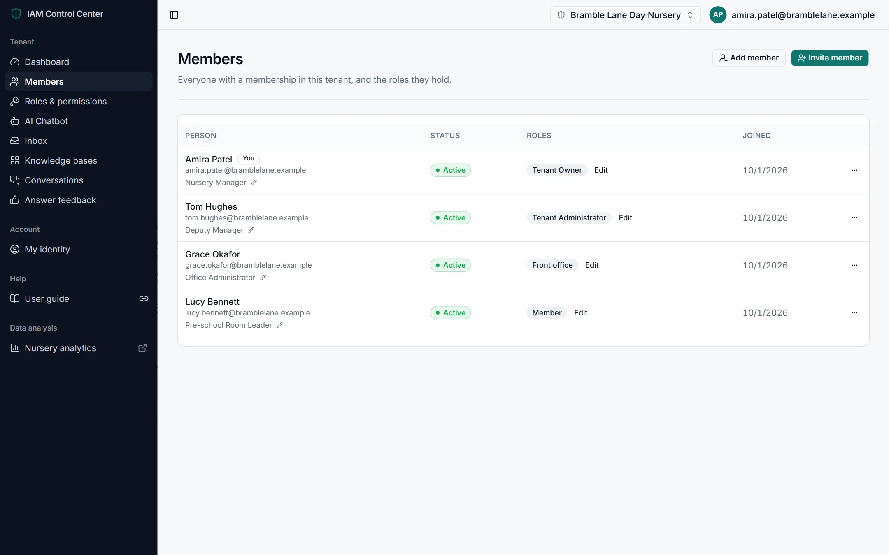
Adding people
There are two ways to add a colleague:
- Add member adds someone who already has a portal account, straight away, with the role you choose.
- Invite member creates an invitation for a new person, with a role pre-selected.
"Your plan doesn't include adding members"
If you see this message, the buttons are disabled because your plan doesn't include extra members. Ask your platform provider to enable it.
Managing a member
Click the pencil next to a member's job title to edit it. Open the … menu on a member's row for these actions:
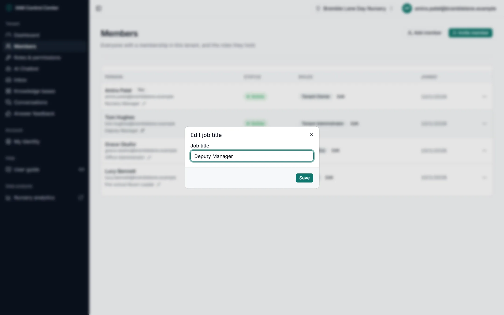
| Action | What it does | When to use it |
|---|---|---|
| Suspend | Temporarily blocks the person's access to your organisation. | Extended leave, or while you check a concern. |
| Reactivate | Restores a suspended member's access. | When they return. |
| Revoke access | Removes the person from your organisation. | When someone leaves. Do it on their last day. |
| Restore access | Brings back a revoked member. | If access was removed by mistake. |
Roles
- Menu
- Roles & permissions
- Purpose
- Define what each role can do, and see your own permissions.
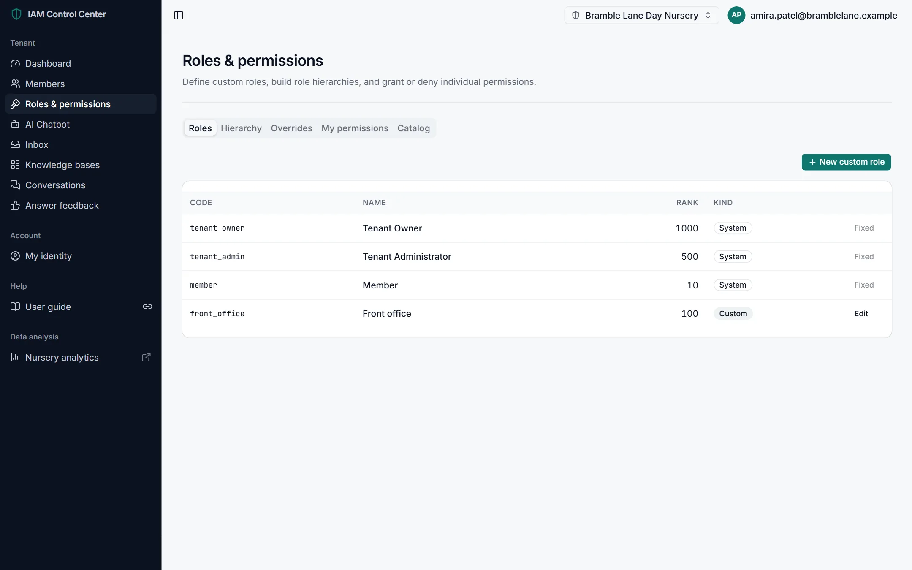
Every organisation has three built-in roles:
| Role | Who it's for |
|---|---|
| Tenant Owner | The person ultimately responsible for your organisation's account. Can do everything. |
| Tenant Administrator | People who run the chatbot and manage colleagues day to day. |
| Member | Colleagues who use the portal with basic access, for example to ask the knowledge base questions. |
If your plan includes it, New custom role lets you create a role with exactly the permissions you choose. You can only give a role permissions you hold yourself.
Hierarchy, overrides, your permissions and the catalogue
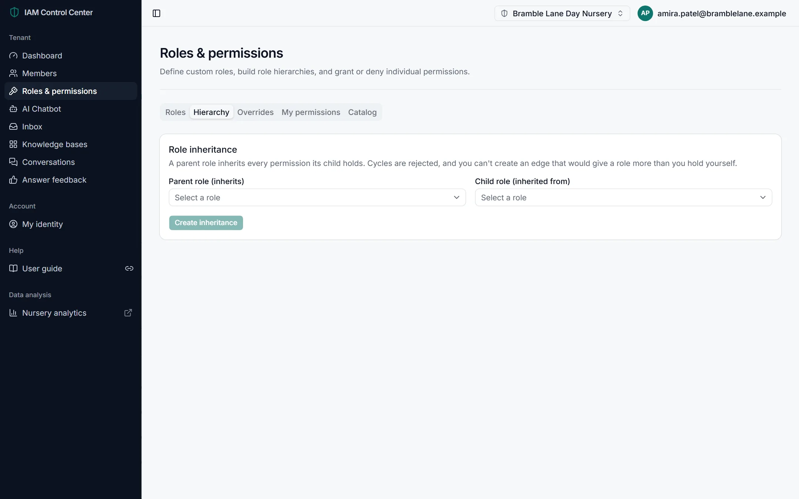
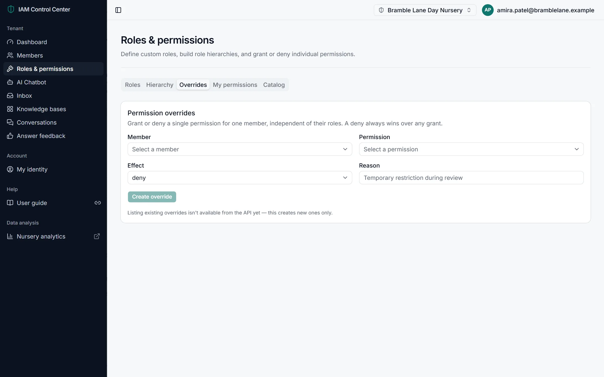
| Tab | What it's for |
|---|---|
| Hierarchy | Makes one role inherit everything another role can do (for example, "Senior advisor" inherits "Advisor"). |
| Overrides | Grants or denies one permission to one member, regardless of their roles. A deny always wins. A reason is required, for your records. |
| My permissions | Everything you can do, combining your roles, inherited roles and overrides. |
| Catalog | Every permission that exists, with a description and a risk level. |
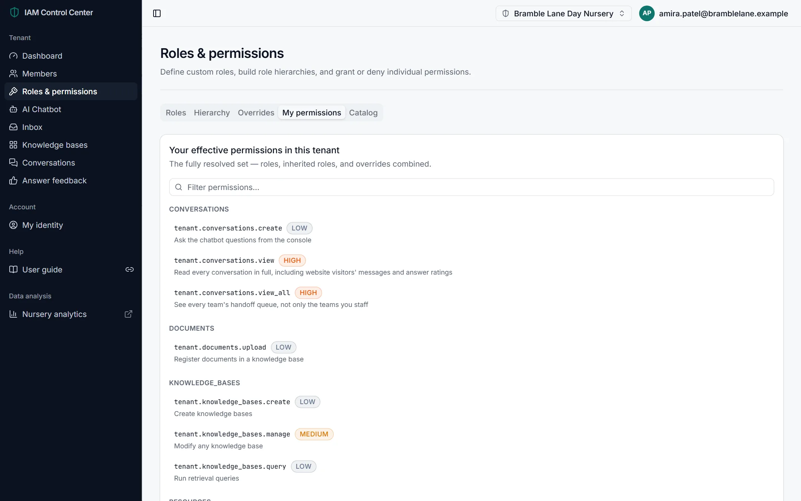
Permission reference
| Permission | What it allows | Risk |
|---|---|---|
| Ask the chatbot (conversations.create) | Ask questions from the portal. | Low |
| Read conversations (conversations.view) | Read every conversation in full, including website visitors' messages and ratings. | High |
| See every queue (conversations.view_all) | See every team's handoff queue, not only the teams you're in. | High |
| Add documents (documents.upload) | Add documents and web pages; also allows changing chatbot settings. | Low |
| Create knowledge bases | Create new knowledge bases. | Low |
| Manage knowledge bases | Change or delete any knowledge base. | Medium |
| Search knowledge bases | Run test searches. | Low |
| Manage roles | Create roles and assign them to members. | High |
| Invite members | Invite new people to your organisation. | Medium |
| Manage members | Suspend, reactivate and revoke memberships. | Medium |
Security best practice
- Give each person the smallest role that lets them do their job.
- Limit high-risk permissions, especially reading all conversations, to people who need them.
- Review your member list every month, and revoke access on the day someone leaves.
- Keep at least two people who can manage roles, so you're never locked out.
Settings management
Your personal account settings, and every setting for your organisation in one place.
My identity (your account)
- Menu
- My identity
- Purpose
- Your profile, password, two-step sign-in, linked sign-in providers and sessions.
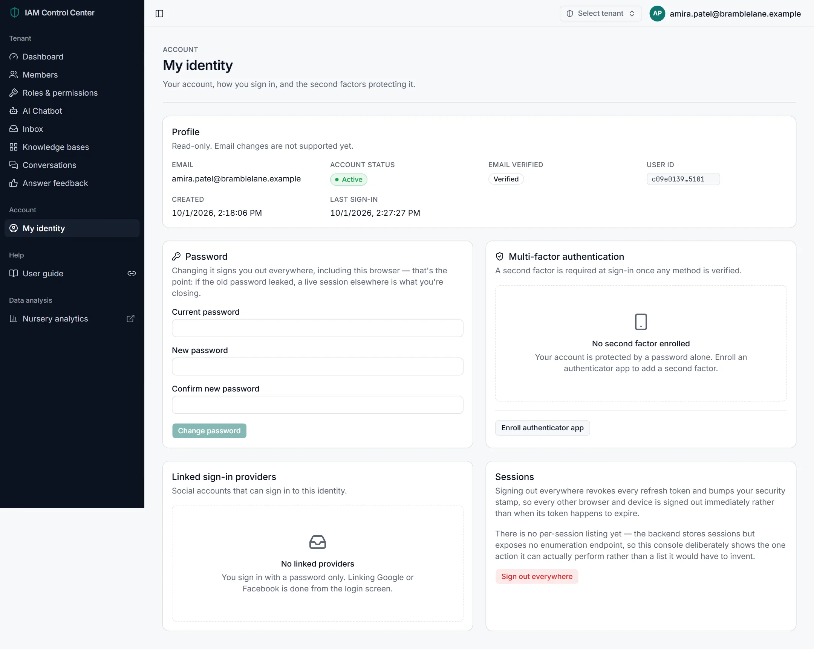
| Section | Purpose | Recommended |
|---|---|---|
| Profile | Your email, account status and last sign-in (read-only). | Check Last sign-in occasionally. If it wasn't you, change your password. |
| Password | Change your password. This signs you out everywhere, including this browser. | Change it if you think it may have been seen, and at least once a year. |
| Multi-factor authentication | Adds a second step at sign-in: a six-digit code from an authenticator app on your phone. | Turn this on. Click Enroll authenticator app, scan the code with an app such as Microsoft Authenticator or Google Authenticator, and enter the code shown. |
| Linked sign-in providers | Google or Facebook accounts that can sign in as you. | Only link accounts you control and protect. |
| Sessions | Sign out everywhere immediately signs you out of every other browser and device. | Use it after signing in on a shared computer, or if your phone is lost. |
All tenant settings at a glance
Every setting you control for your organisation, where to find it, and what we recommend.
| Setting | Where | Purpose | Recommended |
|---|---|---|---|
| AI Chatbot on/off | AI Chatbot (top) | Whether the AI answers visitors. | On |
| Allowed websites | AI Chatbot → On your website | Where your chatbot may appear. | Only your own sites |
| Chatbot name, title, avatar, greeting | AI Chatbot → Identity | How it introduces itself. | Friendly and clear |
| Role, Avoid | AI Chatbot → Behaviour | What it's for, and what it must never do. | Specific, plain sentences |
| Personality, Response length | AI Chatbot → Tone & style | How it sounds, and how much it says. | Friendly, Balanced |
| Company name, Industry, Description | AI Chatbot → Company | Who it speaks for. | Complete and current |
| Quick reply suggestions | AI Chatbot → Reply experience | Starter buttons for visitors. | On |
| Use visitor location | AI Chatbot → Reply experience | Approximate location in answers. | Off unless needed |
| Allow transfer to a colleague | AI Chatbot → Handoff & limits | Lets visitors reach a person. | On, with a staffed team |
| AI summary as an internal comment | AI Chatbot → Handoff & limits | Staff-only summary on transfer. | On |
| AI answers unassigned conversations | AI Chatbot → Handoff & limits | AI keeps helping until someone takes over. | On |
| Daily AI message limit | AI Chatbot → Handoff & limits | Your own daily cap. | Blank (plan maximum) |
| Time zone | AI Chatbot → Handoff & limits | When the daily limit resets. | Your local time zone |
| Conversation retention | AI Chatbot → Handoff & limits | How long conversations are kept. | As short as your policy allows |
| Teams | Inbox → Teams | Who visitors can be handed to. | At least one staffed team |
| Members and roles | Members, Roles & permissions | Who can use the portal, and what they can do. | Smallest role needed |
Settings your platform provider manages
These are part of your plan or service. You can see their effects, but only your platform provider can change them:
- Assistant type — the kind of organisation your chatbot speaks for (shown on the Company tab).
- The AI model and the platform's safety rules.
- How many knowledge bases and website chatbots you can have.
- Your plan's maximum daily questions and monthly AI allowance.
- Whether you can add members and create custom roles.
Controls your plan doesn't include
Buttons for features your plan doesn't include are shown disabled, with a message explaining why, so you always know what to ask your provider for.
Safeguarding and data protection
How your chatbot responds when a child's safety is mentioned, what you must put in place, and what happens to the information visitors type.
How your chatbot handles safeguarding
For nurseries and other organisations that work with children, the platform gives your chatbot strict safeguarding rules that you can't switch off. When a message suggests a child may be at risk, your chatbot:
- points the person to your Designated Safeguarding Lead (DSL) using the contact details in your knowledge base, and to 999 if a child is in immediate danger;
- never investigates, assesses or decides anything about a concern, and never asks a child, parent or member of staff probing questions;
- never confirms anything about a named child, such as whether they attend, are in today or have been collected, whoever claims to be asking;
- doesn't give medical advice about a specific child, such as whether to give medicine or what a symptom means.
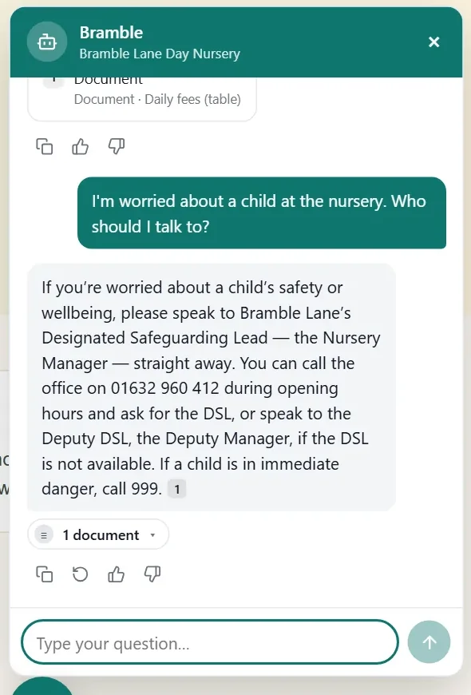
What you need to put in place
- Upload your safeguarding policy or a short statement that says who your DSL and deputy DSL are (by role is fine) and how to contact them. Without it, the chatbot can only say "contact the nursery".
- Include emergency and out-of-hours contacts, such as your local children's services and the NSPCC helpline.
- Test it. Ask "I'm worried about a child, who should I talk to?" on your website and check the answer names the right person.
- Brief the staff who read conversations on what to do if they find a concern in a chat (see below).
The chatbot is not a way to report a concern
Nobody watches conversations as they happen. A parent may still type a worry into the chat, so check Conversations and the Inbox every day. If you find a disclosure or a concern, follow your safeguarding procedure straight away, exactly as you would for a concern raised any other way. Don't reply in the chat with questions about it.
Data protection
Your chatbot keeps a record of conversations so you can review and improve it. Here is what that means in practice.
| Question | Answer |
|---|---|
| What is stored? | What visitors type, the chatbot's replies, any replies from your team, and the date and time. Visitors don't sign in, so they aren't identified unless they type their own details. |
| Is location stored? | No. If Use visitor location is on, an approximate area may be used to answer, but it isn't saved with the conversation. |
| Who can read conversations? | Only members whose role includes reading conversations. Every time someone opens a visitor's conversation, the audit trail records who and when. |
| How long is it kept? | For your retention period (30 days unless you change it). After that it is deleted automatically and can't be recovered. |
| Can I delete one visitor's conversation? | Not from the portal. If someone asks you to delete their conversation, contact your platform provider, who can remove it. Shortening the retention period also removes older conversations. |
| Can I give someone a copy of their conversation? | There's no export button. Open the conversation and copy its text, or ask your platform provider for help. |
Good practice
- Mention the chatbot in your website's privacy notice: that conversations are kept, for how long, and why.
- Ask visitors not to share personal details about their child in the chat. A line in the greeting works well, for example "Please don't share personal details here."
- Keep the retention period as short as your records policy allows.
- Give "read conversations" only to people who need it (see the permission reference).
This section explains how the portal works; it isn't legal advice. Your organisation is usually the "data controller" for what visitors tell your chatbot, so check your arrangements with whoever handles data protection for you.
Best practices
The habits of organisations whose chatbots answer well.
- Keep documents up to date.
- Remove outdated information instead of adding new versions beside it.
- Use clear documents with headings and one topic per section.
- Prefer real text to scans or images of text.
- Add a question-and-answer document for common questions.
- Check that every document is Ready and none couldn't be read.
- Test your most common questions after every change.
- Review the couldn't answer list and fill the gaps.
- Read every 👎 rating and fix its cause.
- Improve your Role and Avoid instructions as you learn.
- Test in a private window, so you see what visitors see.
- Keep facts in the knowledge base, not in instructions.
- Keep at least one staffed team for handoffs.
- Answer handed-over conversations promptly.
- Use a warm greeting and quick replies.
- Make sure the chatbot shows as Installed on your site.
- Manage user access and use the smallest role needed.
- Protect credentials, and turn on two-step sign-in.
- Revoke access on the day someone leaves.
- Only allow your own websites to show the chatbot.
- Keep conversations only as long as you need them.
Troubleshooting guide
Common problems, what usually causes them, and how to fix them step by step.
AnswersThe AI can't answer questions it should know
Possible causes
- The information isn't in your knowledge base, or is worded very differently.
- The document or page is still processing, or failed.
- The website chatbot answers from a different knowledge base.
Solution
- Run a test search with the visitor's exact words.
- If the right page isn't listed, add a page or document containing the answer (Add written text).
- Check every document is Ready in the documents window.
- Ask again in a new, private chat.
AnswersThe chatbot says your sources belong to another organisation
For example: "The supplied sources describe <another name>, not <your organisation>, so I should not use them."
Possible causes
- Your assistant type doesn't match your organisation (for example, it's set to UK nursery but you run a training academy).
- Your Company name is different from the name used in your documents.
Solution
- Check the assistant type on the AI Chatbot → Company tab.
- If it's wrong, ask your platform provider to change it. It takes effect on the next answer.
- Make sure your Company description mentions the name your documents use (for example, "trading as Bramble Lane Nursery").
- Test in a new, private chat; an old conversation remembers earlier answers.
AnswersMy changes don't show on the website
Possible causes
- The chat window resumed an earlier conversation.
- Your browser is still using its saved copy of the chatbot (for up to an hour).
- You didn't click the tab's Save button.
Solution
- Check you saved the tab you changed.
- Open your website in a private window and start a new chat.
- Still old after an hour? Contact your platform provider.
WebsiteThe chatbot doesn't appear on my website
Possible causes
- The embed code isn't on the page, or was pasted in the wrong place.
- The website's address isn't in Where it can appear.
- The chatbot was hidden from the website, or the AI Chatbot switch is off.
Solution
- Look at the On your website card. Is the status Installed, Not installed or Turned off?
- Check the address exactly matches your site, including
https://andwww.. - Ask your web developer to confirm the code is just before
</body>on every page. - Click Check again after reloading your website.
ContentA document is stuck processing
Possible causes
- It's large or scanned, and still being read.
- Many documents are queued at once.
- A background service needs attention.
Solution
- Wait a few minutes. The percentage shows it's still moving.
- If there's no progress after 30 minutes, contact your platform provider with the document's name.
ContentA document failed or "couldn't be read"
Possible causes
- The file is password-protected, damaged, or not really the type its name says.
- It's a scan of very poor quality.
- It contains no readable text (for example only images of charts).
Solution
- Read the reason shown under the document, and the stage where it failed.
- Fix the file: remove the password, re-save it from its original program, or export it as PDF or Word.
- Upload it again, or click Retry, then delete the failed copy.
ContentAn upload is refused
Possible causes
- The file type isn't supported.
- The file is larger than 50 MB.
Solution
- Check the file type against the supported list.
- Split large files into smaller documents, or compress images inside them.
ContentWeb pages weren't all added
Possible causes
- An Entire website fetch reached the platform's page or depth limit.
- Some pages need a login, or block automated access.
- A page address was mistyped.
Solution
- Check the source's page count (for example "25 of 25 pages").
- Add missing pages using Specific URLs, listing exactly the pages you need.
- For login-only pages, save the content as a document and upload it instead.
AnswersAnswers are out of date
Possible causes
- Your website changed but its pages weren't fetched again.
- An old document is still in the knowledge base alongside a new one.
Solution
- Fetch web pages again with the refresh icon on the web source (Update content).
- Delete old versions of documents.
- Test again in a new chat.
AnswersAnswers cite the wrong pages
Possible causes
- Several pages talk about the same topic, some only in passing.
- Pages contain a lot of repeated menus, cookie banners or footer text.
Solution
- Run a test search and note which pages rank highest.
- Open the unhelpful ones (See what was read) and delete pages that add nothing.
- Add one clear page dedicated to the topic.
HandoffVisitors aren't offered "Speak to a person"
Possible causes
- No team has anyone in it.
- Allow transfer to a colleague is off.
- Every team is set not to be offered to visitors.
Solution
- Add at least one person to a team in Inbox → Teams.
- Turn on Allow transfer to a colleague on the Handoff & limits tab.
- Check the team's Offered to visitors switch is on.
HandoffHanded-over conversations are waiting too long
Possible causes
- Team members aren't watching the Inbox, or notifications are blocked.
- The team is too small for the volume.
Solution
- Turn on Sound on and allow browser notifications.
- Add more people to the team, or create teams by topic.
- Keep AI answers unassigned conversations on, so visitors get help while they wait.
UsageThe chatbot stops answering part-way through the day
Possible causes
- Today's AI question limit was reached.
- The limit resets at midnight in a different time zone from yours.
Solution
- Check Questions answered today on the dashboard.
- Raise your own daily limit (up to your plan's maximum) on the Handoff & limits tab.
- Set the time zone to your local time.
- If you regularly need more, ask your platform provider about a larger plan.
UsageThe monthly AI allowance is used up
Possible causes
- Higher-than-usual traffic, or long answers.
Solution
- Contact your platform provider to raise your allowance; it resets on the first of the month.
- Choose shorter answers (Response length) to use less in future.
AccessA button is disabled ("Your plan doesn't include…")
Possible causes
- You've reached a plan limit (for example knowledge bases or chatbots), or the feature isn't in your plan (adding members, custom roles).
Solution
- Read the message next to the button; it names the limit.
- Free up space (for example delete an unused knowledge base), or ask your platform provider to change your plan.
ContentA knowledge base can't be deleted
Possible causes
- Your website chatbot still answers from it.
- A document in it is still processing, or a web source is still being fetched.
Solution
- Read the message in the delete window; it names the chatbot or the cause.
- Wait for processing to finish, or point your chatbot at a different knowledge base first.
AccessI can't see visitors' conversations
Possible causes
- The page is showing Only mine.
- Your role doesn't include reading all conversations.
Solution
- Click Show all conversations.
- If you don't have permission, ask your organisation's owner to review your role.
AccessI was signed out unexpectedly
Possible causes
- Your password was changed, or Sign out everywhere was used.
- Your membership was suspended, or you were away for a long time.
Solution
- Sign in again.
- If you didn't change anything, change your password straight away and turn on two-step sign-in.
- If you can't sign in, contact your organisation's owner.
AccessThe password-reset email doesn't arrive
Possible causes
- It went to your spam or junk folder.
- Email sending isn't set up for your portal yet.
Solution
- Check your spam folder, and wait a few minutes.
- Contact your platform administrator, who can help you back in.
GeneralA page shows "This page could not be found" or won't load
Possible causes
- The portal was being updated.
- An old bookmark points to a page that has moved.
Solution
- Refresh the page after a minute.
- Use the menu rather than a bookmark.
- If it persists, contact your platform provider with the page name and the time.
Go-live and daily operations
A plan for your first week, then a routine that keeps your chatbot accurate and your visitors happy. Tick items as you go; your ticks are remembered in this browser.
Your first week
Launch quietly, watch closely, and fix gaps while traffic is low.
First week 0 / 6
Daily, weekly and monthly routine
Daily 0 / 5
Weekly 0 / 6
Monthly 0 / 6
Glossary
Plain-English meanings of the terms used in the portal and this guide.
- Tenant
- Your organisation's own private space in the portal. Your content, conversations, settings and members are completely separate from every other organisation's.
- Assistant / AI chatbot
- The AI that answers your visitors' questions on your website, using only your content.
- Assistant type
- The kind of organisation your chatbot speaks for (for example UK nursery, or education and training provider). It decides which industry rules apply. Set by your platform provider.
- Knowledge base
- The collection of documents and web pages your chatbot answers from.
- Source
- A single document or web page in your knowledge base. Answers show which sources they used.
- Passage
- A short piece of a source. The portal splits each source into passages so the chatbot can find exactly the relevant part.
- Retrieval
- The search step: finding the passages that best match a question before the answer is written. Test search shows you this step.
- Citation
- The small number after a fact in an answer (such as
1), linking it to the source it came from. - Token
- The unit AI usage is measured in, roughly three-quarters of a word. Longer questions, sources and answers use more tokens. Your monthly allowance is measured in tokens.
- AI model
- The AI engine that writes answers. It's chosen and maintained by your platform provider.
- Conversation
- One chat between a visitor (or member) and your chatbot, possibly including a colleague after a handoff.
- Handoff
- Passing a conversation from the AI to a person on one of your teams.
- Team
- A group of your colleagues who take handed-over conversations, such as "Admissions".
- Allowance
- How much your plan lets your chatbot answer: a daily number of questions, and a monthly amount of AI usage.
- Embed code
- The single line you paste into your website to show the chatbot. It isn't secret.
- Allowed website
- A website address where your chatbot may appear. It stays hidden everywhere else.
- Role
- A named set of permissions given to members, such as Tenant Administrator.
- Permission
- One specific thing a person may do, such as "read conversations".
- Two-step sign-in (MFA)
- Signing in with your password plus a code from an app on your phone, so a stolen password alone isn't enough.
- Designated Safeguarding Lead (DSL)
- The person in your organisation responsible for child protection. Your chatbot directs safeguarding concerns to them, so your knowledge base should say who they are and how to reach them.
- Visibility
- Which people in your organisation can see a knowledge base in the portal. It doesn't affect what your website chatbot answers from.
- Retention period
- How long conversations are kept before they are deleted automatically. Set on the AI Chatbot page's Handoff & limits tab.
- Audit trail
- A permanent record of important actions, such as opening a visitor's conversation or deleting a knowledge base.
About this guide
How to share it, what has changed, and how it supports different needs.
Sharing this guide
This guide lives inside the portal at /help, for example https://portal.yourcompany.com/help. Anyone with the link can read it, with no account needed, so you can send it to a new colleague before their account exists.
- In the portal's left-hand menu, find Help → User guide.
- Click the link icon beside it. The guide's address is copied.
- Paste it into an email or a message.
Link straight to a section
Add a section name to the end of the link, for example /help#troubleshooting or /help#first-day.
What's new
- Version 1.1
- 1 October 2026. New chapters: Your first day, Safeguarding and data protection, and this one. New sections: who can see a knowledge base, the first-week plan, and the Help menu. Screenshots retaken with a fictional nursery. Easier to read on small phones: tap a screenshot, then tap again to see it at reading size.
- Version 1.0
- 30 September 2026. First edition.
Accessibility
- Every screenshot has a text description for screen readers, and the steps never rely on the picture alone.
- Keyboard: / opens search, Tab moves between links, and Esc closes an enlarged screenshot.
- Reduced motion: if your device is set to reduce motion, the guide jumps instead of scrolling smoothly.
- Dark mode follows your device, or use the button at the bottom of the menu.
- Printing: print from your browser for a paper copy; the menu and buttons are left out and each chapter starts on a new page.
If something in this guide is hard to use, tell your platform provider so it can be fixed.
Screenshot gallery
All the screenshots in this guide. Click one to enlarge it; use the arrow keys to move between them.